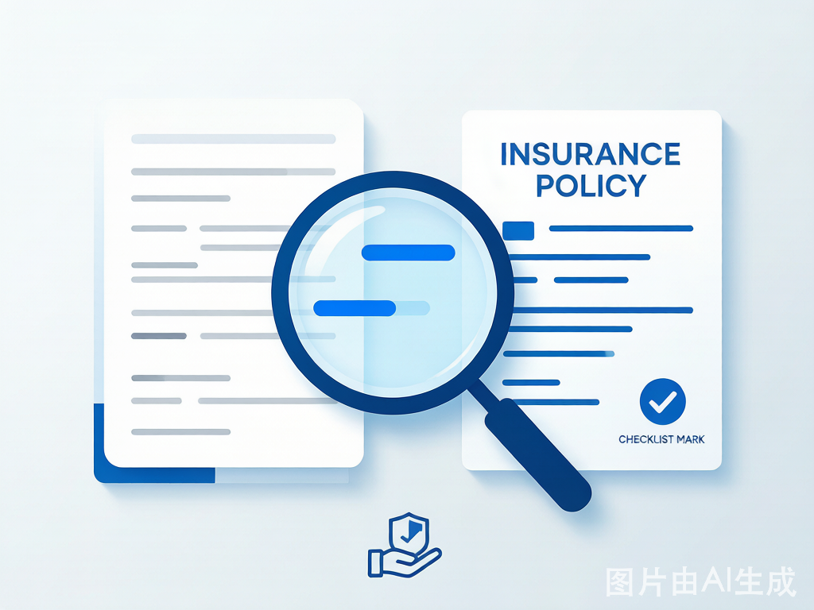
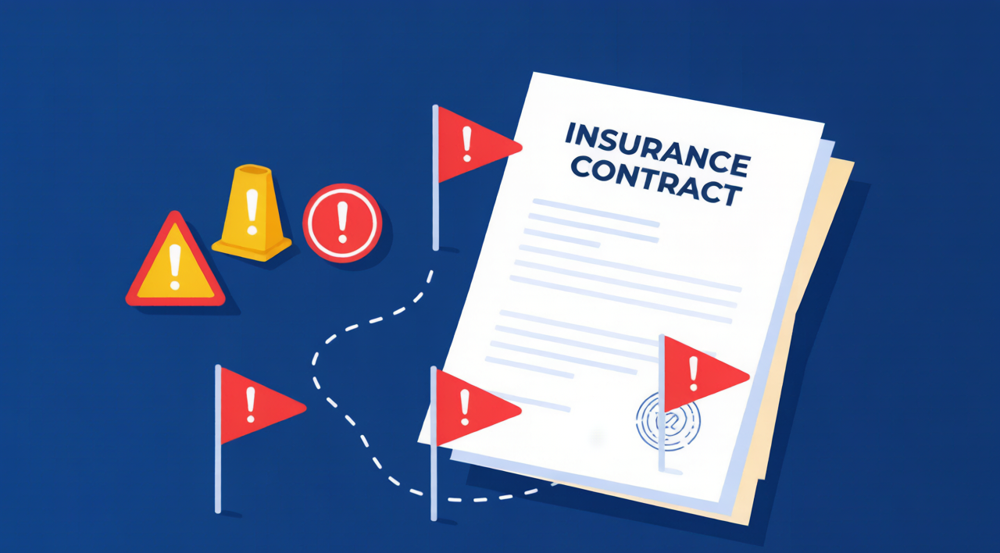

2025重疾险选购终极指南：保额·期限·赔付次数·5个致命陷阱，一个真实理赔故事说透
2025年重疾险选购完全指南——保额定多少才够？定期还是终身？单次vs多次赔付怎么选？用真实理赔案例拆解5个最常见陷阱，附2025年热门产品横向对比。
**摘要：** 陈女士买了50万重疾险，确诊乳腺癌后却只赔了20万——因为条款里"甲状腺癌和乳腺癌同属恶性肿瘤组，只赔一次"。本文用一个真实理赔案例 + 5个致命陷阱拆解 + 保额定终身公式 + 2025年产品对比，让你买重疾险不再踩坑。
一个真实理赔故事：为什么50万保额只赔了20万？
2024年3月，武汉的陈女士（41岁）摸到乳房有肿块，去医院检查——确诊为乳腺癌（II期）。
幸运的是，她2018年买了重疾险，保额50万。确诊后她第一时间申请理赔，结果——
**保险公司只赔了20万。**
陈女士傻眼了。翻开合同才发现：2018年她买的是"分组多次赔付型重疾险"，恶性肿瘤和重大器官移植在**同一组**。2022年她因甲状腺癌做过手术，当时已经赔了30万。
分组的规则是：**同一组疾病只赔一次。**
甲状腺癌和乳腺癌都属于"恶性肿瘤组"——所以第二次不赔了。
"如果当时多花10%的保费，买不分组的，这次能再拿50万。"陈女士说，"省了3000块保费，亏了30万理赔。"
据银保信2025年发布的《重大疾病保险理赔年报》，分组型重疾险的"二次获赔率"比不分组的低**47%**。省下的保费和潜在的理赔差距，是很多人忽略的数学。
第一步：保额定多高？一个公式算清
重疾险的保额不是越高越好——太高保费负担重，太低起不到保障作用。
定保额公式
```最低保额 = 治疗费用(30万-50万) + 康复费用(10万-20万) + 收入损失(年收入×3年)
```举例：
| 年收入 | 治疗费 | 康复费 | 3年收入损失 | **建议保额** |
|---|---|---|---|---|
| ¥10万 | ¥30万 | ¥10万 | ¥30万 | **¥70万** |
| ¥20万 | ¥40万 | ¥15万 | ¥60万 | **¥100-120万** |
| ¥30万 | ¥50万 | ¥20万 | ¥90万 | **¥150万+** |
| ¥5万 | ¥30万 | ¥10万 | ¥15万 | **¥50万（底线）** |
**铁律：** 预算再有限，重疾险保额**不要低于30万**。低于这个数，一场大病的治疗费都覆盖不了，这个保险就白买了。
预算不够怎么办？
| 策略 | 具体做法 | 效果 |
|---|---|---|
| 缩短保障期 | 保至70岁 → 比终身便宜40%-50% | 把省的钱加到保额上 |
| 选消费型 | 不要返还/分红 → 便宜30%-50% | 保费全部用于保障 |
| 加长缴费期 | 选30年缴 → 年交压力小 | 利用豁免条款，越往后越划算 |
| "重疾+百万医疗"组合 | 重疾30万 + 百万医疗险 | 医疗费靠医疗险，收入补偿靠重疾险 |
第二步：定期 vs 终身，哪个适合你？

| 保障期限 | 30岁男·50万保额·年保费(约) | 优势 | 劣势 | 适合谁 |
|---|---|---|---|---|
| 保至70岁 | ¥3,200-4,500 | **保费最低** | 70岁后无保障 | 预算紧张+有百万医疗险 |
| 保终身 | ¥6,000-8,500 | 一辈子有保障 | 保费贵50%+ | 预算充足的30-45岁 |
| 保至80岁 | ¥4,500-6,500 | 折中方案 | 80岁后同样无保障 | 45岁以上 |
**核心逻辑：** 年龄越轻，终身比定期贵得越多（因为保的时间长）；年龄越大，两者差距缩小。所以**30-35岁预算紧的选定期**，**40岁以上建议终身**。
第三步：单次赔付 vs 多次分组 vs 多次不分组
这是陈女士踩的坑——也是重疾险最核心的选择维度。
| 类型 | 赔付方式 | 30岁·50万·年保费 | 二次获赔概率 |
|---|---|---|---|
| 单次赔付 | 赔一次，合同终止 | ¥3,500-5,000 | 0（合同已终止） |
| 分组多次 | 每组赔一次（通常5-6组） | ¥5,000-7,000 | 中（同组不赔第二次） |
| 不分组多次 | 不同疾病可多次赔 | ¥6,000-9,000 | **高**（陈女士的情况就能赔） |
如果你选分组多次赔付——必须看这一点
**恶性肿瘤（癌症）必须单独一组。** 因为癌症是重疾中发病率最高的（占重疾理赔的**60%-70%**，据中国精算师协会《2025年重疾发生率表》），也是复发转移率最高的。如果癌症和其他疾病同组（像陈女士那样），二次获赔的概率大打折扣。
**一句话建议：** 预算允许 → 不分组多次赔付。预算中等 → 分组多次但癌症单独分组。预算紧张 → 单次赔付（先有保障再说）。
第四步：轻症/中症豁免——这笔小钱一定要花
轻症豁免的意思是：你得了合同约定的轻症（如原位癌、冠状动脉介入手术），**后续所有保费不用再交，保障继续有效**。
2025年主流产品的轻症豁免保费约每年增加**50-100元**。
为什么强烈建议加？因为随着体检普及，早期发现疾病（轻症/中症阶段）的概率越来越高。以上海为例，2024年体检人群中，甲状腺结节检出率超过**40%**，乳腺结节超过**30%**——这些大多属于轻症或达不到重疾标准。有了豁免，一旦触发轻症理赔，你等于"免费用到了终身保障"。
5个致命陷阱——陈女士只踩了一个

陷阱1：选了"分组且癌症不单独分组"的产品
**后果：** 甲状腺癌赔了，乳腺癌不赔（陈女士的遭遇）。
**避坑方法：** 合同里搜索"分组"两个字，确认恶性肿瘤是单独一组的。
陷阱2：买了返还型/分红型重疾险
**真实对比：** 30岁男·50万保额
| 类型 | 年保费 | 30年总保费 | 70岁返还金额 | 实际年化 |
|---|---|---|---|---|
| 消费型 | ¥5,500 | ¥165,000 | ¥0 | — |
| 返还型 | ¥9,500 | ¥285,000 | ¥285,000 | — |
| 消费型+定投余款 | ¥5,500 | ¥165,000 | ¥4,000/年×30年定投≈¥310,000 | 约4.2% |
**结论：** 返还型多收了你12万，40年后还给你28.5万——看起来"没亏"，但你把这12万自己做定投，40年后大概率超过30万。**返还型重疾险的本质是你借给保险公司一笔无息贷款。**
陷阱3：盲目给小孩买高保额，自己的保障不够
很多父母先给孩子买50万重疾险，自己只买了20万。
**正确逻辑：** 孩子不赚钱——孩子生病，家长可以用自己的收入和工作来覆盖。而**家长是家庭的经济支柱**，一旦家长患重疾，收入中断 + 医疗费 = 家庭财务瞬间崩塌。
**正确顺序：** 先保赚钱的人，再保不赚钱的人。家庭支柱保额≥80万，孩子20-30万即可（当附加险）。
陷阱4：投保前去体检
很多人觉得"买保险前先体检一下，免得理赔时麻烦"——**这是最错误的操作。**
**真实案例：** 李先生（32岁）买重疾险前特意去做了全身体检，"力求如实告知"。结果查出空腹血糖6.3mmol/L（略高于6.1的正常上限），保险公司认定为"糖耐量异常"，对糖尿病及并发症做了**除外承保**。而他在此之前完全不知道自己的血糖有问题。
**正确做法：** 以最后一次体检报告/就医记录为准，如实回答健康告知问卷就好。**问卷没问到的不需要主动说，问了的一定要如实答。** 投保后等过了等待期（通常90-180天）再体检。
陷阱5：忽视健康告知导致理赔被拒
据银保信2025年数据，重疾险拒赔案例中，**43%**是因为投保时未如实告知既往病史。
健康告知通常会问：近2年内的住院史、手术史、以及指定疾病（高血压、糖尿病、结节、囊肿等）。如果你2年前有相关病史但已痊愈、且被问到——仍然需要告知。
**处理策略：**
- 有结节/轻微异常 → 尝试**智能核保**（部分产品可以正常承保）
- 不确定某项是否该告知 → 告知，让保险公司判断，不要自作主张"没说"
- 曾被拒保 → 不同公司核保标准不同，多试几家
2025年热门产品速览
| 产品 | 类型 | 30岁·50万·年保费 | 特色 |
|---|---|---|---|
| 达尔文10号 | 单次+轻中症 | ¥4,200 | 性价比最高，健康告知宽松 |
| 超级玛丽11号 | 单次+轻中症 | ¥4,500 | 癌症多次赔付可选 |
| 守卫者7号 | 不分组多次 | ¥6,800 | 重疾不分组赔3次 |
| 复星联合康乐一生 | 分组多次(癌症单组) | ¥6,200 | 癌症津贴，确诊后每年领 |
| 信泰如意倍护 | 不分组多次 | ¥7,500 | 含特定心脑血管二次赔 |
一句话总结
**重疾险的真相是：保额比保费重要、不分组比分组重要、如实告知比什么都重要。省了保费亏了理赔的事每天在上演——陈女士的故事告诉我们，买保险不是比价格，是比条款。**
常见问题 FAQ
**Q：重疾险和百万医疗险都买，是不是重复了？**
A：完全不重复，两者解决不同层次的问题。**百万医疗险**是"报销型"——你花了多少医疗费，按比例报销（解决看病的钱）。**重疾险**是"给付型"——确诊后一次性赔你一笔固定金额（如50万），解决的是生病后无法工作导致的收入损失、康复费用、护工费等。陈女士的例子很典型——如果她同时有百万医疗险（报销医疗费约15万）和重疾险（一次性赔付20万/或更理想的50万），医疗费不用动重疾理赔金，重疾理赔金可以全部用于3年的康复和收入补偿。**建议组合：百万医疗险（基础）+ 重疾险（升级）**。
**Q：消费型重疾险到期没生病，钱不就白交了？**
A：这个心态可以理解，但保险的逻辑不是"有病赔钱、没病返本"。你交的每一分保费，买的是一份"不管用不用得上，我都睡得着"的安心。就像你每年交车险，出了事有人赔，没出事——难道你希望出事吗？换个角度：如果你买的是返还型（年交9500元），比消费型多交4000元/年，30年多交12万。这12万——如果你自己拿去定投沪深300指数基金，按8%年化算，30年后是约47万。所以消费型不是"白交"，而是**把本该属于你的钱留给你自己打理**。如果预算确实紧张，又想要"没生病不亏"的感觉，可以考虑"两全险"——满期返还已交保费，但注意收益率极低。
**Q：重疾险有等待期，等待期内查出问题怎么办？**
A：大多数重疾险的等待期为**90-180天**。等待期内确诊重疾，保险公司不承担责任，通常退还已交保费（或现金价值），合同终止。等待期内查出的异常，如果属于投保前已有的问题，可能被认定为"投保前既往症"而免责。**所以：投保后90-180天内，非紧急情况不要体检。** 这不是逃避，而是保护自己的权益——如果真有紧急情况，该看医生还是要看。
*本文重疾发生率数据来源于中国精算师协会《中国人身保险业重大疾病经验发生率表（2025）》，理赔数据来源于银保信《重大疾病保险理赔年报（2025）》。产品保费为2025年Q1参考值，实际以投保时报价为准。案例人物为化名。本文不构成投保建议，具体保障以保险合同条款为准。*